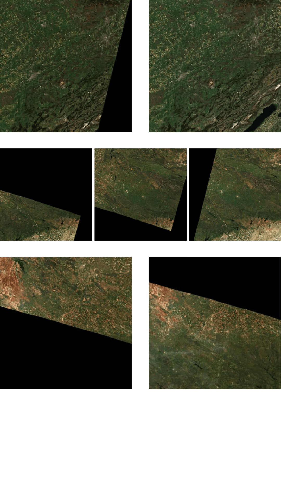
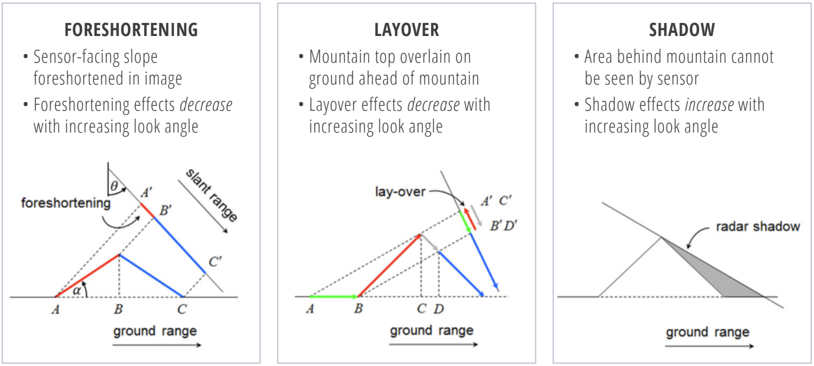

Data selection
Selecting which observations to include requires navigating two interrelated concerns: the temporal distribution of acquisitions (Section Temporal distribution) and the quality criteria for both optical (Section Optical data selection) and SAR data (Section SAR data selection). They involve trade-offs that are straightforward to state but difficult to resolve in practice, particularly at global scale.
Temporal distribution
We frame the present discussion around the task of producing a yearly map. Under this setting, we discuss how to temporally select EO data within a period of approximately 12 months. There is no one-size-fits-all guideline for temporal distribution, much of it ultimately depends on how much data one can afford to process. When deciding how many time steps to obtain, three broad strategies emerge: single time-steps, time-series, or composites, each with its own trade-offs. Time-series are arguably the richest option, capturing phenomena like seasonal variation across a defined period. [1] showed that a monthly Sentinel-2 time-series of one-year preserved the seasonal nuances and geolocation shifts that median composites tend to wash away, and [2] found benefits in using a time-series of composited PlanetScope imagery over using a single image. The trade-off is data size: they are memory-intensive to store by nature. Furthermore, for each timestep in the time series comes the question of which observation to choose. In the case of optical data, most researchers opt for a time-series with a monthly temporal resolution, choosing the least cloudy product per month [1], [3], [4], [5]. Composites offer a pragmatic alternative, distilling an entire period of observations into the memory footprint of a single time-step, as in [6], [7], [8], [9], [10], [11]. Yet, compositing is not without its own costs: it requires deliberate design choices and non-trivial computations. Typical approaches consists of performing mean or median compositing, the latter involving computing percentiles, and the former being more sensitive to outliers. Moreover, if compositing cannot be performed on-the-fly before downloading the data, practitioners must store (at least temporarily) the time-series the composite will be computed from, undermining much of the storage advantage. While the per-pixel processing cost may appear modest in isolation, it scales dramatically: at a global scale, every additional step must be applied to each pixel on Earth, which can quickly become prohibitive. One can also produce a time series of composites, e.g., monthly composites of Sentinel-2 [4], seasonal composites [12], [13], [14], [15], or using a predetermined moving window [2], [16], [17], [18]. Single time-steps, by contrast, are the most cost-efficient route but they come at the expense of the temporal dimension, which often carries rich, discriminative information. Indeed, [18] found that performance steadily improved with access to longer input timespans when mapping tree mortality, and [19] found similar results for canopy height mapping.
Beyond the choice of temporal representation, the time range itself must be defined. We focus on vegetation-related tasks throughout this section, where the trade-offs are particularly well documented, but the same considerations apply across domains. A common default is to restrict the analysis to the leaf-on season [5], [6], [18], [20], [21], [22], but identifying that period for every pixel on Earth is in itself non-trivial. Operational phenology products offer one solution: [18] use the VIIRS Global Land Surface Phenology product [23], while [21] use the MODIS equivalent [24]. Both products are released at annual intervals, so inter-annual shifts in phenological dates are in principle captured. However, the underlying algorithms assume a vegetation cycle with at most two growing cycles per year, an assumption that breaks down for multi-cropping systems with more than two cycles. [15] bypass this limitation by relying on global crop calendars instead [25]. More fundamentally, the annual leaf-on/leaf-off framing is itself a temperate-zone assumption that does not generalize to tropical systems [26]. The leaf-on framing can also be limiting in its own right: [1] show that incorporating both summer leaf-on and winter leaf-off observations improves performance, and [27] find that for biomass estimation in Finland, early-spring Sentinel-2 acquisitions are more informative than summer ones, which they attribute to “the higher contrast between vegetation and snow, which enhances the ability to distinguish vegetation properties”. This logic does not extend everywhere, but regions with strong seasonal contrast can benefit from year-round data. A more task-specific variant samples contrasting images from different times within the same year to expose intra-annual variation, as applied by [28] for crop field segmentation. The calendar year itself is also a poor natural boundary: in the Southern Hemisphere, summer spans the end of one year and the beginning of the next, so a global-scale pipeline must accommodate such cross-year shifts rather than assume that a single calendar year is a sufficient window.
In summary, the temporal strategy should be guided by the specifics of the task at hand, keeping in mind that any processing will have to be applied to every pixel on Earth and that data volume scales with the size of the land mass. Beyond when and how often to observe, the next question is which individual observations are reliable enough to include, a decision governed by the quality criteria discussed next.
Optical data selection
Even after temporal selection, individual observations vary in usability. Two factors dominate optical imagery: cloud contamination and sensor-specific artifacts that introduce gaps or duplications. Rather than discussing the per-pixel quality flags shipped with each product (e.g., the Sentinel-2 SCL band or Landsat QA band), we focus on higher-level quality criteria that govern whether entire products should be included or discarded.
Upon selecting which data product to work with, a common filter in optical imagery is the cloud cover. We elaborate on the various methods to perform cloud detection in Section Data Preprocessing and henceforth assume access to a reliable cloud mask. A common approach is to discard data products with a cloud cover above a certain threshold (e.g., 10
Another important criterion for selecting optical data products is the occurrence of artifacts. For example, Landsat 7 imagery acquired after 2003 exhibits wedge-shaped gaps from the Scan Line Corrector failure, affecting roughly 22

SAR data selection
SAR imagery is not affected by clouds, but its side-looking acquisition geometry introduces its own artifacts: geometric distortion due to foreshortening, layover, and shadow (see Figure Figure 7.2). These deterministic perturbations arise from the interaction between terrain relief and the radar’s look vector: given a digital elevation model and the acquisition geometry, the distortion pattern can be predicted.
For Sentinel-1 in Interferometric Wide (IW) mode, three factors define this viewing geometry: the relative orbit number or track (the satellite’s repeating ground path), the sub-swath (which sets the incidence angle range), and the pass direction (ascending or descending). Ascending and descending acquisitions of the same area are complementary (slopes that suffer layover under one geometry are often well-imaged under the other) and combining the two is a standard strategy for filling distortion gaps in mountainous regions. More generally, several tracks are typically available over any target area, each contributing hundreds of acquisitions over the mission’s lifetime. Both the data volume and the need for geometric consistency over time (required for analyses such as interferometric stacks, amplitude change detection, or feature extraction) may push toward the selection of a single track. ESA’s Sentinel-1 Burst ID Map [29] provides the metadata needed to make this choice. It consists of global polygons that divide each sub-swath into smaller units called bursts, each annotated with its track and sub-swath identifier. Together with the pass direction, these identifiers specify the viewing geometry for any given location, and three approaches of increasing detail can be used to select among the candidates. The simplest uses the burst grid alone: candidates are filtered by sub-swath, typically with a preference for mid-range incidence angles, which is sufficient for flat or moderate terrain. For rougher terrain, combining the burst grid with a digital elevation model allows candidates to be ranked by the alignment between the radar’s look direction and the dominant slope aspect. For a more exact comparison, tools such as SNAP’s SAR Simulation Operator can simulate the per-pixel layover and shadow masks that would arise from each candidate, though the per-candidate simulation cost makes this approach impractical at scale.

Once the temporal strategy and quality criteria for data selection have been established, the next challenge is to process the selected observations into a consistent, analysis-ready format.